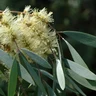

Correspondence Grimoire
Spots
Type
Oils15

Cajeput Essential OilSpots are isolated facial blemishes, small pimples, occasional breakouts, or minor inflamed papules, that respond well to targeted topical treatment with antiseptic, astringent, and anti-inflammatory essential oils. Closely related to acne, but typically more localized and less persistent.
Suggested Application
Apply via skin oil/lotion or neat application.
Oils
 Bergamot Essential Oil (S, N)
Bergamot Essential Oil (S, N) Cade Oil (S, N)
Cade Oil (S, N)- Cajeput Essential Oil (S, N)
 Camphor Essential Oil (S, N), white camphor only
Camphor Essential Oil (S, N), white camphor only Lemon-Scented Eucalyptus Essential Oil (S, N)
Lemon-Scented Eucalyptus Essential Oil (S, N) Helichrysum Essential Oil (S, N)
Helichrysum Essential Oil (S, N)- Lavandin Essential Oil (S, N)
 Spike Lavender Essential Oil (S, N)
Spike Lavender Essential Oil (S, N)- Lavender Essential Oil (S, N)
- Lemon Essential Oil (S, N)
- Lime Essential Oil (S, N)
 May Chang Essential Oil (S, N)
May Chang Essential Oil (S, N)- Mandarin Essential Oil (S, N)
 Niaouli Essential Oil (S, N)
Niaouli Essential Oil (S, N) Tea Tree Essential Oil (S, N)
Tea Tree Essential Oil (S, N)